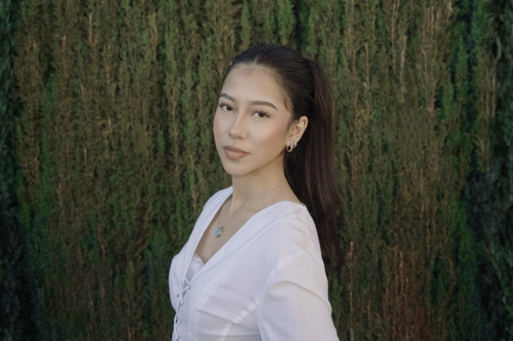

Hi, I’m Fiorella Sosa!
I’m a recent USC graduate with a passion for brand strategy, social media, and consumer insights. Through experience spanning student housing, fashion tech, and creative marketing, I’ve developed a people-first approach to understanding audiences and creating meaningful brand experiences. I love blending analytical thinking with storytelling to bring ideas to life and build authentic connections between brands and their communities..
Interests
Beauty, fashion, digital culture, creator economy, community marketing, and Gen Z consumer behavior.
Looking For
Opportunities to grow within brand marketing, social strategy, influencer marketing, and consumer insights—particularly within beauty, fashion, lifestyle, and culture-driven brands.
Currently
Working full-time at The Standard at Los Angeles by Landmark Properties, where I support leasing, resident engagement, and community-focused marketing initiatives while continuing to expand my experience in brand storytelling and audience engagement.
Want to Learn More?
Explore my projects to see how I approach social strategy, consumer research, and creative problem-solving through real campaigns and hands-on experience.